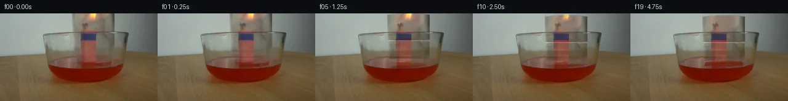

![首帧]()

Round 00
2026-11-05T17:40:54.808511+00:00像素候选变化代码 +257/−0inspection 更新
pixels 4632619517226896 · code 8bd13993c072eada
查看本轮 generate.py 真实 diff
--- previous/generate.py
+++ current/generate.py
@@ -0,0 +1,257 @@
+"""Deterministic source-image pixel animation. No models or renderer are used."""
+from pathlib import Path
+import json
+import hashlib
+import numpy as np
+from PIL import Image, ImageDraw
+from scipy.ndimage import gaussian_filter, map_coordinates
+from scipy.sparse import lil_matrix
+from scipy.sparse.linalg import spsolve
+import artifact_io
+
+ROOT = Path(__file__).resolve().parent
+H, W = 144, 256
+Y, X = np.mgrid[:H, :W].astype(np.float64)
+SOURCE = np.array(Image.open(ROOT / 'first_frame.png').convert('RGB'))
+SRC = SOURCE.astype(np.float64)
+
+def smoothstep(a, b, x):
+ z = np.clip((x-a)/(b-a), 0.0, 1.0)
+ return z*z*(3-2*z)
+
+
+def harmonic_fill(source, mask):
+ """Solve a local discrete Laplace problem, with source boundary colors."""
+ coords = np.argwhere(mask)
+ ids = np.full(mask.shape, -1, dtype=np.int32)
+ ids[mask] = np.arange(len(coords))
+ mat = lil_matrix((len(coords), len(coords)), dtype=np.float64)
+ rhs = np.zeros((len(coords), 3))
+ for i, (y, x) in enumerate(coords):
+ neighbors = [(yy,xx) for yy,xx in [(y-1,x),(y+1,x),(y,x-1),(y,x+1)]
+ if 0 <= yy < H and 0 <= xx < W]
+ mat[i,i] = len(neighbors)
+ for yy,xx in neighbors:
+ if mask[yy,xx]:
+ mat[i,ids[yy,xx]] = -1
+ else:
+ rhs[i] += source[yy,xx]
+ result = source.copy()
+ result[mask] = spsolve(mat.tocsr(), rhs)
+ return result
+
+# The orange flame/halo is removed locally by interpolation of the surrounding
+# photographed glass. Match heads at y>=16 and all of the holder stay intact.
+flame_hole = (Y < 16) & (X >= 137) & (X <= 168)
+clean = harmonic_fill(SRC, flame_hole)
+emission = np.zeros_like(SRC)
+emission[flame_hole] = SRC[flame_hole] - clean[flame_hole]
+
+# Infer an unglazed backdrop from same-row neighboring source textures. Only
+# the inferred transmission is moved; this does not translate the match bundle.
+backdrop = SRC.copy()
+for y in range(86):
+ if y < 30:
+ left = SRC[y, 108:116].mean(axis=0)
+ right = SRC[y, 189:197].mean(axis=0)
+ else:
+ left = SRC[y, 105:115].mean(axis=0)
+ right = SRC[y, 194:200].mean(axis=0)
+ for x in range(115,190):
+ f = (x-112)/(196-112)
+ backdrop[y,x] = (1-f)*left + f*right
+
+# Glass has a measured asymmetric dark edge. Preserve those photographed
+# profiles, and interpolate across the stationary solid bundle and match tips.
+ratio = np.ones_like(SRC)
+ratio[:86,115:190] = clean[:86,115:190] / np.maximum(backdrop[:86,115:190], 1)
+for y in range(86):
+ if y < 30:
+ lo, hi = 131, 146
+ else:
+ lo, hi = 129, 161
+ for x in range(lo, hi+1):
+ f = (x-lo)/(hi-lo)
+ ratio[y,x] = (1-f)*ratio[y,lo-1] + f*ratio[y,hi+1]
+ratio = np.clip(ratio, 0.38, 1.10)
+# Preserve subpixel photographic edge texture rather than drawing hard outlines.
+ratio[:86,115:190] = gaussian_filter(ratio[:86,115:190], sigma=(0.45,0.32,0))
+
+left_edge = 116.5 + .023*np.clip(Y,0,82)
+right_edge = 186.6 - .017*np.clip(Y,0,82)
+side_mask = smoothstep(left_edge-1.0,left_edge+0.9,X) * (1-smoothstep(right_edge-.5,right_edge+1.0,X))
+initial_bottom = 82 + 4.5*np.sqrt(np.clip(1-((X-152)/33.5)**2,0,1))
+initial_mask = side_mask*(1-smoothstep(initial_bottom-1,initial_bottom+1.2,Y))
+# The foreground bowl rim is fixed. The red foreground liquid increasingly
+# obscures the moving glass lower down in the bowl.
+visibility = (1-smoothstep(79,99,Y)*.94)
… diff truncated; 170 more lines …